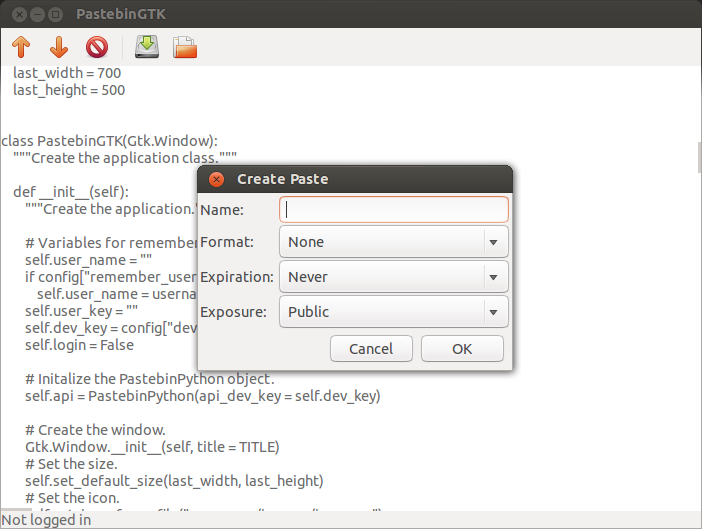
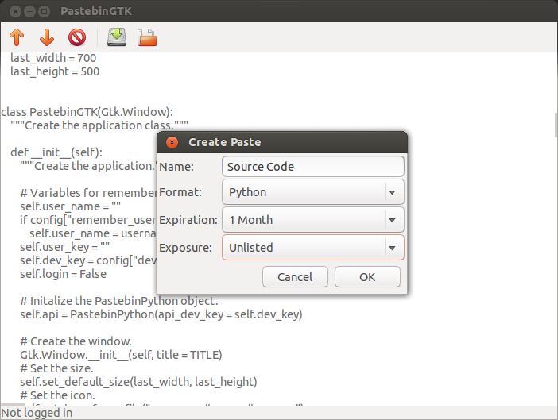
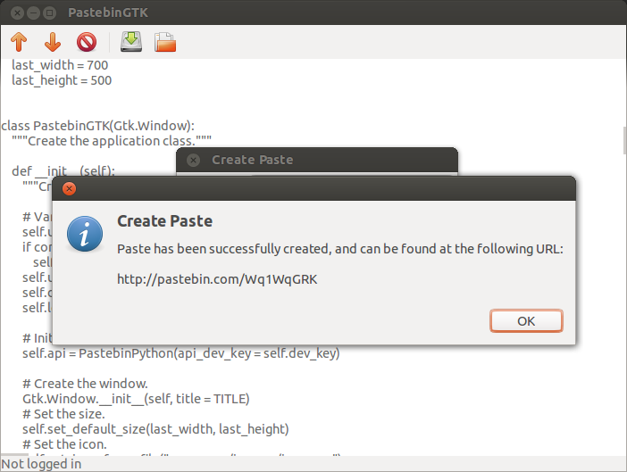
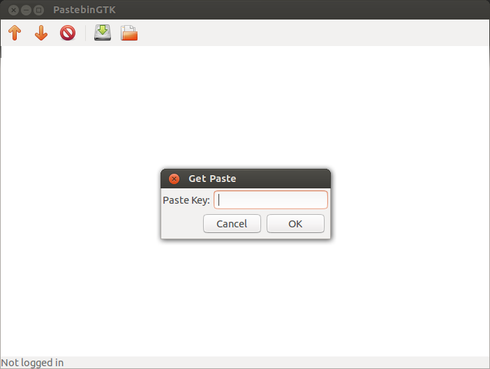
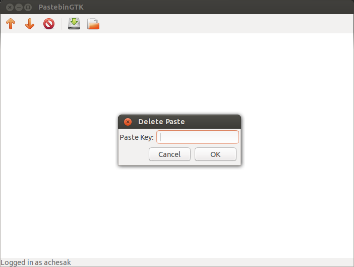
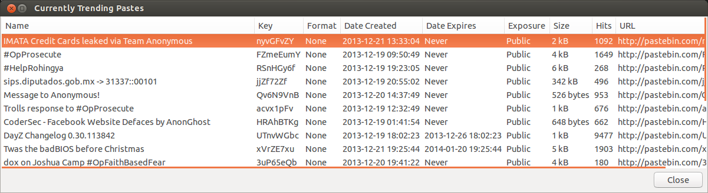
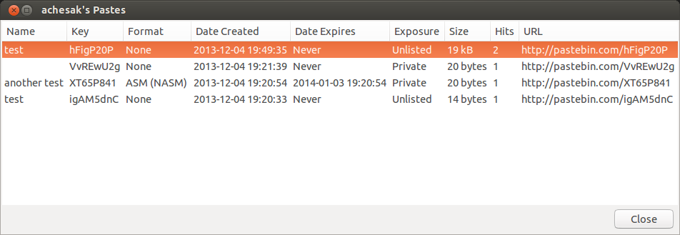

1. Introduction
The first time you start PastebinGTK you will be presented with a basic interface that should look similar to this:

The main window appears along with a smaller login window. If you want to create pastes as a certain user then you need to log in first, but if you wish to create a paste anonymously then clicking the "Skip" button will close the window. If you want to log in later after already closing the window then simply open the "Pastebin" menu and choose "Login". If you want to logout later, choose "Logout" from the same menu.
(Back to top)
2. Creating a Paste
To create a new paste, choose "Create Paste" from the "Pastebin" menu or hit Ctrl+N. Doing so will open a window that allows you to choose options like the title, format (file type), expiration, and exposure for the paste.

As an example, this image shows the PastebinGTK source code being uploaded, with the title of the paste set to "Source Code" and the format to Python source code. In addition, the paste will expire and be automatically deleted in one month, and in that time will be unlisted (available to everyone, but only if they have the direct link).

If the paste is uploaded successfully then another window will appear with the direct link to the paste.

(Back to top)
3. Getting a Paste
PastebinGTK can also retrieve existing pastes. Choosing the "Get Paste" item in the "Pastebin" menu, or pressing Ctrl+R, will cause this window will appear:

The paste key is the unique identifier for the paste. It is the part of the URL after the "http://pastebin.com". For example, in the link "http://pastebin.com/hFigP20P" the paste key is "hFigP20P".
(Back to top)
4. Deleting a Paste
PastebinGTK allows you to delete pastes that you no longer want. Note that this requires you to be logged in to the account that created the paste. Anonymous pastes cannot be deleted.
To delete a paste, select "Delete Paste" from the "Pastebin" menu or press Ctrl+D.

See the section on getting pastes for information on the paste key.
(Back to top)
5. Getting Lists of Pastes
PastebinGTK can also display lists of trending pastes and user's pastes.
Trending pastes are the current popular pastes. They can be shown by selecting "List Trending Pastes" from the "Pastebin" menu or by pressing Ctrl+T.

It is also possible to list a user's pastes by choosing "List User's Pastes". Note that this requires the user to be currently logged in.

(Back to top)